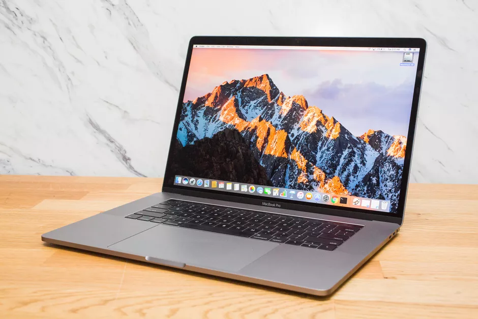

La computadora mas innovadora

El MacBook Pro lleva el rendimiento y la portabilidad del notebook a otro nivel. Te ofrece, en menos
de 1,4 kilogramos de peso, procesadores y memoria de alto rendimiento, gráficas avanzadas,
almacenamiento ultrarrápido y mucho más. Podrás llegar adonde tus ideas te lleven.
Espeficicaciones
Procesador Intel de 4 núcleos
Rendimiento gráfico hasta un 80% más rápido
Memoria de hasta 32 GB
Velocidad de lectura de SSD de hasta 3,0 GB/s
El MacBook Pro de 13 pulgadas, configurable hasta con un procesador Intel Core i7 de 4 núcleos de décima generación, está listo para ayudarte a resolver rápido las tareas más difíciles, como compilar código, combinar varias pistas en una composición musical o codificar videos. Además, por primera vez podrás configurar el MacBook Pro de 13 pulgadas con 32 GB de memoria. Obtendrás un rendimiento hasta 50% más rápido al editar imágenes de gigapixeles en Photoshop2, podrás agregar más instrumentos virtuales a una mezcla de sonido y ejecutar múltiples máquinas virtuales con una fluidez increíble.
El procesador Intel de décima generación, con nuevas y poderosas gráficas Iris Plus, ofrece un rendimiento gráfico hasta un 80% más rápido que la generación anterior.1 Esto significa que podrás editar videos con más facilidad, renderizar contenido en 3D con más velocidad y jugar de forma más fluida.